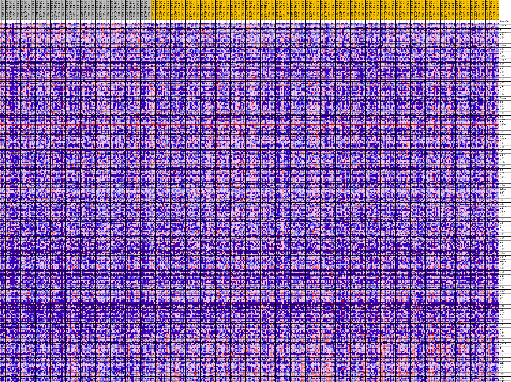
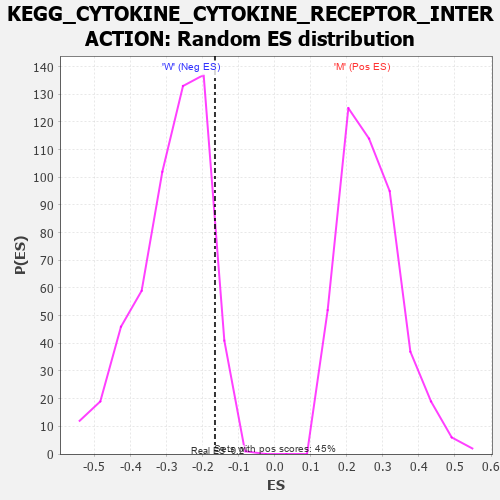

Profile of the Running ES Score & Positions of GeneSet Members on the Rank Ordered List
| Dataset | MUC16.MUC16.cls#M_versus_W.MUC16.cls#M_versus_W_repos |
| Phenotype | MUC16.cls#M_versus_W_repos |
| Upregulated in class | W |
| GeneSet | KEGG_CYTOKINE_CYTOKINE_RECEPTOR_INTERACTION |
| Enrichment Score (ES) | -0.16575344 |
| Normalized Enrichment Score (NES) | -0.586294 |
| Nominal p-value | 0.93454546 |
| FDR q-value | 0.9968028 |
| FWER p-Value | 1.0 |
| PROBE | DESCRIPTION (from dataset) | GENE SYMBOL | GENE_TITLE | RANK IN GENE LIST | RANK METRIC SCORE | RUNNING ES | CORE ENRICHMENT | |
|---|---|---|---|---|---|---|---|---|
| 1 | TNFSF9 | na | 373 | 0.190 | 0.0037 | No | ||
| 2 | TNFRSF10A | na | 628 | 0.171 | 0.0085 | No | ||
| 3 | RELT | na | 966 | 0.151 | 0.0108 | No | ||
| 4 | TNFRSF11A | na | 1227 | 0.141 | 0.0138 | No | ||
| 5 | AMH | na | 1637 | 0.127 | 0.0134 | No | ||
| 6 | IL7 | na | 1774 | 0.123 | 0.0177 | No | ||
| 7 | TNFRSF10B | na | 1857 | 0.120 | 0.0229 | No | ||
| 8 | CD70 | na | 1933 | 0.118 | 0.0280 | No | ||
| 9 | IL20RA | na | 2147 | 0.113 | 0.0304 | No | ||
| 10 | CNTF | na | 2412 | 0.107 | 0.0315 | No | ||
| 11 | IFNLR1 | na | 2428 | 0.107 | 0.0371 | No | ||
| 12 | CXCL16 | na | 2465 | 0.106 | 0.0423 | No | ||
| 13 | LIF | na | 2868 | 0.099 | 0.0404 | No | ||
| 14 | CXCL1 | na | 2888 | 0.099 | 0.0455 | No | ||
| 15 | TNFSF13 | na | 2932 | 0.098 | 0.0501 | No | ||
| 16 | IL22RA1 | na | 3476 | 0.089 | 0.0452 | No | ||
| 17 | TNFRSF10D | na | 3662 | 0.086 | 0.0466 | No | ||
| 18 | CCL28 | na | 3794 | 0.085 | 0.0489 | No | ||
| 19 | TNFSF4 | na | 3805 | 0.084 | 0.0534 | No | ||
| 20 | CCL13 | na | 4027 | 0.082 | 0.0538 | No | ||
| 21 | EGFR | na | 4469 | 0.076 | 0.0500 | No | ||
| 22 | IL18 | na | 4643 | 0.073 | 0.0509 | No | ||
| 23 | EGF | na | 4744 | 0.072 | 0.0531 | No | ||
| 24 | CXCL3 | na | 4777 | 0.072 | 0.0564 | No | ||
| 25 | TNFRSF21 | na | 4860 | 0.071 | 0.0589 | No | ||
| 26 | EDA | na | 5035 | 0.069 | 0.0595 | No | ||
| 27 | TNFRSF13C | na | 5036 | 0.069 | 0.0633 | No | ||
| 28 | IL17RA | na | 5224 | 0.067 | 0.0636 | No | ||
| 29 | AMHR2 | na | 5278 | 0.066 | 0.0663 | No | ||
| 30 | VEGFD | na | 5440 | 0.065 | 0.0669 | No | ||
| 31 | CD27 | na | 5479 | 0.064 | 0.0697 | No | ||
| 32 | ACVR2A | na | 5691 | 0.062 | 0.0693 | No | ||
| 33 | IL21R | na | 5704 | 0.062 | 0.0725 | No | ||
| 34 | CCR8 | na | 5957 | 0.059 | 0.0712 | No | ||
| 35 | GH2 | na | 6159 | 0.057 | 0.0707 | No | ||
| 36 | CXCL8 | na | 6670 | 0.052 | 0.0643 | No | ||
| 37 | IL18R1 | na | 6724 | 0.051 | 0.0662 | No | ||
| 38 | CCL3 | na | 6940 | 0.050 | 0.0650 | No | ||
| 39 | IL1R2 | na | 7027 | 0.049 | 0.0661 | No | ||
| 40 | TNFRSF9 | na | 7071 | 0.048 | 0.0680 | No | ||
| 41 | IFNGR1 | na | 7104 | 0.048 | 0.0701 | No | ||
| 42 | CCL27 | na | 7618 | 0.044 | 0.0632 | No | ||
| 43 | TNFRSF14 | na | 7677 | 0.044 | 0.0645 | No | ||
| 44 | IL2RB | na | 7709 | 0.044 | 0.0664 | No | ||
| 45 | OSM | na | 7737 | 0.043 | 0.0683 | No | ||
| 46 | LTBR | na | 7867 | 0.042 | 0.0683 | No | ||
| 47 | CXCR5 | na | 7944 | 0.042 | 0.0692 | No | ||
| 48 | CCL4 | na | 8060 | 0.041 | 0.0693 | No | ||
| 49 | CCL18 | na | 8218 | 0.039 | 0.0686 | No | ||
| 50 | CCL7 | na | 8326 | 0.038 | 0.0688 | No | ||
| 51 | IL15 | na | 8383 | 0.038 | 0.0699 | No | ||
| 52 | CXCL13 | na | 8636 | 0.036 | 0.0673 | No | ||
| 53 | IL10RA | na | 8822 | 0.034 | 0.0658 | No | ||
| 54 | IL1RAP | na | 8863 | 0.034 | 0.0670 | No | ||
| 55 | XCL1 | na | 9145 | 0.032 | 0.0636 | No | ||
| 56 | TNFRSF18 | na | 9522 | 0.029 | 0.0583 | No | ||
| 57 | IL24 | na | 9806 | 0.026 | 0.0547 | No | ||
| 58 | EDAR | na | 10269 | 0.023 | 0.0475 | No | ||
| 59 | CCL8 | na | 10967 | 0.018 | 0.0358 | No | ||
| 60 | CXCL10 | na | 11252 | 0.016 | 0.0315 | No | ||
| 61 | TNF | na | 11311 | 0.015 | 0.0313 | No | ||
| 62 | CCL22 | na | 11809 | 0.012 | 0.0230 | No | ||
| 63 | IL2RA | na | 12129 | 0.010 | 0.0177 | No | ||
| 64 | IL1B | na | 12583 | 0.007 | 0.0099 | No | ||
| 65 | TNFRSF25 | na | 12623 | 0.007 | 0.0096 | No | ||
| 66 | IL10RB | na | 12797 | 0.006 | 0.0068 | No | ||
| 67 | CXCR6 | na | 12966 | 0.005 | 0.0040 | No | ||
| 68 | CXCL6 | na | 13062 | 0.004 | 0.0024 | No | ||
| 69 | PRLR | na | 13063 | 0.004 | 0.0027 | No | ||
| 70 | CCL25 | na | 13290 | 0.003 | -0.0013 | No | ||
| 71 | IL18RAP | na | 13301 | 0.003 | -0.0013 | No | ||
| 72 | CCL24 | na | 13318 | 0.003 | -0.0015 | No | ||
| 73 | IL6R | na | 13388 | 0.002 | -0.0026 | No | ||
| 74 | IL15RA | na | 13431 | 0.002 | -0.0033 | No | ||
| 75 | TNFRSF6B | na | 14345 | 0.000 | -0.0199 | No | ||
| 76 | CCR9 | na | 15100 | -0.000 | -0.0336 | No | ||
| 77 | FAS | na | 15119 | -0.001 | -0.0339 | No | ||
| 78 | CCL1 | na | 15309 | -0.001 | -0.0372 | No | ||
| 79 | CXCL2 | na | 15572 | -0.003 | -0.0418 | No | ||
| 80 | CCL4L2 | na | 15794 | -0.004 | -0.0456 | No | ||
| 81 | CCL5 | na | 15895 | -0.004 | -0.0472 | No | ||
| 82 | IFNL3 | na | 15980 | -0.005 | -0.0485 | No | ||
| 83 | IL12RB1 | na | 16105 | -0.006 | -0.0504 | No | ||
| 84 | IL17A | na | 16206 | -0.006 | -0.0519 | No | ||
| 85 | TNFRSF1B | na | 16330 | -0.007 | -0.0538 | No | ||
| 86 | IL23R | na | 16437 | -0.007 | -0.0553 | No | ||
| 87 | IL11 | na | 16510 | -0.008 | -0.0562 | No | ||
| 88 | ACVR1B | na | 16676 | -0.009 | -0.0587 | No | ||
| 89 | IL9R | na | 16945 | -0.010 | -0.0630 | No | ||
| 90 | IFNG | na | 17090 | -0.011 | -0.0650 | No | ||
| 91 | CXCL9 | na | 17159 | -0.011 | -0.0656 | No | ||
| 92 | KITLG | na | 17308 | -0.012 | -0.0677 | No | ||
| 93 | IL4R | na | 17317 | -0.012 | -0.0672 | No | ||
| 94 | IFNA4 | na | 17462 | -0.013 | -0.0691 | No | ||
| 95 | LTA | na | 17628 | -0.014 | -0.0713 | No | ||
| 96 | LEPR | na | 17701 | -0.014 | -0.0719 | No | ||
| 97 | TNFSF18 | na | 17717 | -0.014 | -0.0714 | No | ||
| 98 | CCR5 | na | 17755 | -0.014 | -0.0712 | No | ||
| 99 | CX3CL1 | na | 17837 | -0.015 | -0.0719 | No | ||
| 100 | PF4V1 | na | 17942 | -0.015 | -0.0729 | No | ||
| 101 | IL6 | na | 18270 | -0.017 | -0.0779 | No | ||
| 102 | CCR10 | na | 18330 | -0.017 | -0.0781 | No | ||
| 103 | IL22RA2 | na | 18342 | -0.017 | -0.0773 | No | ||
| 104 | IFNAR1 | na | 18393 | -0.018 | -0.0772 | No | ||
| 105 | TNFRSF4 | na | 18618 | -0.019 | -0.0803 | No | ||
| 106 | IL7R | na | 18656 | -0.019 | -0.0799 | No | ||
| 107 | CSF2 | na | 19199 | -0.021 | -0.0886 | No | ||
| 108 | PPBP | na | 19223 | -0.022 | -0.0878 | No | ||
| 109 | IL21 | na | 19269 | -0.022 | -0.0874 | No | ||
| 110 | IFNGR2 | na | 19270 | -0.022 | -0.0862 | No | ||
| 111 | CSF1R | na | 19357 | -0.022 | -0.0866 | No | ||
| 112 | LEP | na | 19451 | -0.023 | -0.0870 | No | ||
| 113 | IFNL2 | na | 19720 | -0.024 | -0.0906 | No | ||
| 114 | TNFRSF1A | na | 19800 | -0.024 | -0.0907 | No | ||
| 115 | CCR1 | na | 20194 | -0.026 | -0.0964 | No | ||
| 116 | CCR2 | na | 20216 | -0.026 | -0.0953 | No | ||
| 117 | CCL26 | na | 20541 | -0.028 | -0.0997 | No | ||
| 118 | FASLG | na | 20865 | -0.029 | -0.1040 | No | ||
| 119 | IL20 | na | 21141 | -0.030 | -0.1073 | No | ||
| 120 | IL12RB2 | na | 21315 | -0.031 | -0.1087 | No | ||
| 121 | XCL2 | na | 21539 | -0.032 | -0.1110 | No | ||
| 122 | ACVR2B | na | 21549 | -0.032 | -0.1094 | No | ||
| 123 | TNFSF13B | na | 21656 | -0.033 | -0.1095 | No | ||
| 124 | IL13RA1 | na | 21839 | -0.033 | -0.1110 | No | ||
| 125 | EPOR | na | 21888 | -0.034 | -0.1100 | No | ||
| 126 | CXCL14 | na | 21932 | -0.034 | -0.1089 | No | ||
| 127 | CSF3R | na | 22111 | -0.034 | -0.1103 | No | ||
| 128 | CCR7 | na | 22206 | -0.035 | -0.1100 | No | ||
| 129 | CXCL11 | na | 22269 | -0.035 | -0.1092 | No | ||
| 130 | BMP2 | na | 22534 | -0.036 | -0.1120 | No | ||
| 131 | INHBA | na | 22741 | -0.037 | -0.1137 | No | ||
| 132 | IL2RG | na | 23616 | -0.041 | -0.1274 | No | ||
| 133 | LIFR | na | 23811 | -0.041 | -0.1286 | No | ||
| 134 | INHBC | na | 23812 | -0.041 | -0.1263 | No | ||
| 135 | TNFRSF12A | na | 24193 | -0.043 | -0.1309 | No | ||
| 136 | CXCL12 | na | 24848 | -0.046 | -0.1402 | No | ||
| 137 | CXCR3 | na | 24902 | -0.046 | -0.1387 | No | ||
| 138 | CSF3 | na | 24958 | -0.046 | -0.1371 | No | ||
| 139 | TNFSF10 | na | 25070 | -0.046 | -0.1366 | No | ||
| 140 | IL12A | na | 25181 | -0.047 | -0.1360 | No | ||
| 141 | CCL3L1 | na | 25323 | -0.047 | -0.1359 | No | ||
| 142 | CCL17 | na | 25443 | -0.048 | -0.1355 | No | ||
| 143 | IL17RB | na | 25455 | -0.048 | -0.1330 | No | ||
| 144 | CSF2RA | na | 25954 | -0.050 | -0.1393 | No | ||
| 145 | CXCL5 | na | 26071 | -0.050 | -0.1387 | No | ||
| 146 | EPO | na | 26087 | -0.050 | -0.1362 | No | ||
| 147 | CLCF1 | na | 26108 | -0.050 | -0.1338 | No | ||
| 148 | IFNL1 | na | 26137 | -0.050 | -0.1315 | No | ||
| 149 | MET | na | 26368 | -0.051 | -0.1328 | No | ||
| 150 | IL12B | na | 26413 | -0.051 | -0.1308 | No | ||
| 151 | IL3 | na | 26900 | -0.053 | -0.1367 | No | ||
| 152 | IL1A | na | 27051 | -0.054 | -0.1365 | No | ||
| 153 | PDGFA | na | 27255 | -0.055 | -0.1371 | No | ||
| 154 | TNFRSF13B | na | 27505 | -0.055 | -0.1386 | No | ||
| 155 | IFNAR2 | na | 27621 | -0.056 | -0.1376 | No | ||
| 156 | BMPR1B | na | 27730 | -0.056 | -0.1365 | No | ||
| 157 | GH1 | na | 28042 | -0.057 | -0.1390 | No | ||
| 158 | CCL20 | na | 28100 | -0.058 | -0.1368 | No | ||
| 159 | CCL15 | na | 28276 | -0.058 | -0.1368 | No | ||
| 160 | OSMR | na | 28344 | -0.058 | -0.1348 | No | ||
| 161 | CCL21 | na | 28458 | -0.059 | -0.1336 | No | ||
| 162 | IFNW1 | na | 28512 | -0.059 | -0.1313 | No | ||
| 163 | PF4 | na | 28754 | -0.060 | -0.1324 | No | ||
| 164 | CXCR1 | na | 29334 | -0.062 | -0.1395 | No | ||
| 165 | IL22 | na | 29797 | -0.063 | -0.1444 | No | ||
| 166 | PDGFRA | na | 29978 | -0.064 | -0.1441 | No | ||
| 167 | IL10 | na | 30019 | -0.064 | -0.1413 | No | ||
| 168 | IFNA17 | na | 30021 | -0.064 | -0.1378 | No | ||
| 169 | IFNB1 | na | 30058 | -0.064 | -0.1349 | No | ||
| 170 | TNFRSF11B | na | 30082 | -0.064 | -0.1318 | No | ||
| 171 | CSF2RB | na | 30281 | -0.065 | -0.1318 | No | ||
| 172 | TNFRSF10C | na | 30555 | -0.066 | -0.1332 | No | ||
| 173 | CD40LG | na | 30693 | -0.066 | -0.1320 | No | ||
| 174 | TNFRSF8 | na | 30710 | -0.066 | -0.1287 | No | ||
| 175 | IFNA1 | na | 31272 | -0.068 | -0.1351 | No | ||
| 176 | TNFRSF17 | na | 31594 | -0.069 | -0.1371 | No | ||
| 177 | CCL23 | na | 31676 | -0.069 | -0.1348 | No | ||
| 178 | VEGFA | na | 31711 | -0.069 | -0.1316 | No | ||
| 179 | CXCR4 | na | 31988 | -0.070 | -0.1327 | No | ||
| 180 | ACVRL1 | na | 32090 | -0.071 | -0.1307 | No | ||
| 181 | TNFSF8 | na | 32155 | -0.071 | -0.1279 | No | ||
| 182 | IFNA8 | na | 32939 | -0.073 | -0.1381 | No | ||
| 183 | CCL16 | na | 33228 | -0.074 | -0.1393 | No | ||
| 184 | PDGFC | na | 33556 | -0.075 | -0.1411 | No | ||
| 185 | IFNA21 | na | 34371 | -0.078 | -0.1516 | No | ||
| 186 | IFNA2 | na | 34628 | -0.079 | -0.1519 | No | ||
| 187 | TGFB2 | na | 34661 | -0.079 | -0.1481 | No | ||
| 188 | IL23A | na | 34898 | -0.079 | -0.1480 | No | ||
| 189 | IFNA16 | na | 34991 | -0.080 | -0.1453 | No | ||
| 190 | IL26 | na | 35372 | -0.081 | -0.1478 | No | ||
| 191 | XCR1 | na | 35611 | -0.081 | -0.1476 | No | ||
| 192 | IL25 | na | 36053 | -0.083 | -0.1510 | No | ||
| 193 | TNFSF14 | na | 36085 | -0.083 | -0.1470 | No | ||
| 194 | ACVR1 | na | 36818 | -0.085 | -0.1556 | No | ||
| 195 | IL20RB | na | 36993 | -0.086 | -0.1541 | No | ||
| 196 | CD40 | na | 37098 | -0.086 | -0.1512 | No | ||
| 197 | TNFSF15 | na | 37300 | -0.087 | -0.1501 | No | ||
| 198 | TGFBR1 | na | 37730 | -0.088 | -0.1530 | No | ||
| 199 | PLEKHO2 | na | 38006 | -0.089 | -0.1531 | No | ||
| 200 | CCL11 | na | 38183 | -0.089 | -0.1514 | No | ||
| 201 | IFNA10 | na | 38975 | -0.092 | -0.1607 | Yes | ||
| 202 | TGFB1 | na | 39139 | -0.093 | -0.1585 | Yes | ||
| 203 | MPL | na | 39271 | -0.093 | -0.1558 | Yes | ||
| 204 | CCR4 | na | 39315 | -0.093 | -0.1514 | Yes | ||
| 205 | KIT | na | 39345 | -0.093 | -0.1468 | Yes | ||
| 206 | IFNA7 | na | 39420 | -0.094 | -0.1429 | Yes | ||
| 207 | IFNA13 | na | 40258 | -0.096 | -0.1528 | Yes | ||
| 208 | IFNA5 | na | 40388 | -0.097 | -0.1499 | Yes | ||
| 209 | CNTFR | na | 40759 | -0.098 | -0.1512 | Yes | ||
| 210 | BMP7 | na | 40995 | -0.099 | -0.1500 | Yes | ||
| 211 | CCR3 | na | 41197 | -0.100 | -0.1481 | Yes | ||
| 212 | INHBB | na | 41362 | -0.100 | -0.1456 | Yes | ||
| 213 | IFNA6 | na | 41584 | -0.101 | -0.1440 | Yes | ||
| 214 | LTB | na | 42333 | -0.104 | -0.1519 | Yes | ||
| 215 | EDA2R | na | 42377 | -0.104 | -0.1470 | Yes | ||
| 216 | PRL | na | 42565 | -0.104 | -0.1446 | Yes | ||
| 217 | IL1R1 | na | 43107 | -0.106 | -0.1486 | Yes | ||
| 218 | IFNA14 | na | 43350 | -0.107 | -0.1470 | Yes | ||
| 219 | CRLF2 | na | 43799 | -0.109 | -0.1492 | Yes | ||
| 220 | IL19 | na | 43902 | -0.109 | -0.1450 | Yes | ||
| 221 | PDGFB | na | 43968 | -0.110 | -0.1401 | Yes | ||
| 222 | IL13 | na | 44273 | -0.111 | -0.1395 | Yes | ||
| 223 | HGF | na | 44478 | -0.111 | -0.1371 | Yes | ||
| 224 | CCL19 | na | 44865 | -0.113 | -0.1379 | Yes | ||
| 225 | CCL2 | na | 44896 | -0.113 | -0.1322 | Yes | ||
| 226 | CCR6 | na | 45007 | -0.114 | -0.1279 | Yes | ||
| 227 | IFNE | na | 45221 | -0.114 | -0.1255 | Yes | ||
| 228 | CXCR2 | na | 45419 | -0.115 | -0.1227 | Yes | ||
| 229 | PPBPP1 | na | 45498 | -0.115 | -0.1178 | Yes | ||
| 230 | TGFB3 | na | 45500 | -0.115 | -0.1114 | Yes | ||
| 231 | TNFSF11 | na | 45893 | -0.117 | -0.1121 | Yes | ||
| 232 | IL5RA | na | 46199 | -0.119 | -0.1111 | Yes | ||
| 233 | IL6ST | na | 46957 | -0.122 | -0.1181 | Yes | ||
| 234 | BMPR2 | na | 47286 | -0.124 | -0.1172 | Yes | ||
| 235 | CTF1 | na | 47342 | -0.124 | -0.1114 | Yes | ||
| 236 | TNFRSF19 | na | 47501 | -0.125 | -0.1074 | Yes | ||
| 237 | IL4 | na | 47690 | -0.126 | -0.1038 | Yes | ||
| 238 | KDR | na | 47734 | -0.126 | -0.0977 | Yes | ||
| 239 | FLT1 | na | 47756 | -0.126 | -0.0911 | Yes | ||
| 240 | TPO | na | 48774 | -0.132 | -0.1023 | Yes | ||
| 241 | FLT4 | na | 48870 | -0.132 | -0.0967 | Yes | ||
| 242 | PDGFRB | na | 48945 | -0.133 | -0.0908 | Yes | ||
| 243 | IL5 | na | 49546 | -0.137 | -0.0941 | Yes | ||
| 244 | IL9 | na | 49917 | -0.139 | -0.0932 | Yes | ||
| 245 | IL3RA | na | 50557 | -0.144 | -0.0969 | Yes | ||
| 246 | CSF1 | na | 50804 | -0.146 | -0.0933 | Yes | ||
| 247 | FLT3 | na | 50982 | -0.147 | -0.0884 | Yes | ||
| 248 | IFNK | na | 51268 | -0.150 | -0.0853 | Yes | ||
| 249 | IL11RA | na | 51304 | -0.150 | -0.0777 | Yes | ||
| 250 | NGFR | na | 51470 | -0.151 | -0.0724 | Yes | ||
| 251 | INHBE | na | 51603 | -0.153 | -0.0663 | Yes | ||
| 252 | BMPR1A | na | 52273 | -0.160 | -0.0697 | Yes | ||
| 253 | IL2 | na | 52824 | -0.167 | -0.0704 | Yes | ||
| 254 | TSLP | na | 53128 | -0.172 | -0.0664 | Yes | ||
| 255 | GHR | na | 53437 | -0.178 | -0.0622 | Yes | ||
| 256 | GDF5 | na | 53488 | -0.179 | -0.0532 | Yes | ||
| 257 | CCL14 | na | 53542 | -0.180 | -0.0443 | Yes | ||
| 258 | TGFBR2 | na | 53656 | -0.183 | -0.0362 | Yes | ||
| 259 | FLT3LG | na | 54018 | -0.192 | -0.0322 | Yes | ||
| 260 | VEGFC | na | 54098 | -0.194 | -0.0229 | Yes | ||
| 261 | TNFSF12 | na | 54202 | -0.197 | -0.0139 | Yes | ||
| 262 | CX3CR1 | na | 54245 | -0.198 | -0.0037 | Yes | ||
| 263 | IL17B | na | 54264 | -0.199 | 0.0070 | Yes | ||
| 264 | VEGFB | na | 54404 | -0.204 | 0.0157 | Yes |

